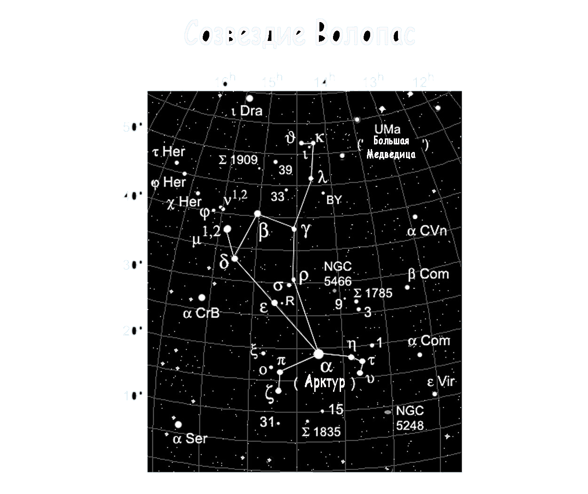

|  |
Интересные факты созвездия ВолопасЕсли ночь безлунная, а небо чистое, в созвездии Волопас можно увидеть без оптики приблизительно 90 звезд. Все эти звезды не очень яркие. Только восемь из всех 90 имеют яркость больше четырех звездных величин. Если соединить эти звезды – получится удлиненный многоугольник, который в вершине имеет третью по яркости звезду на небосводе – Арктур. |